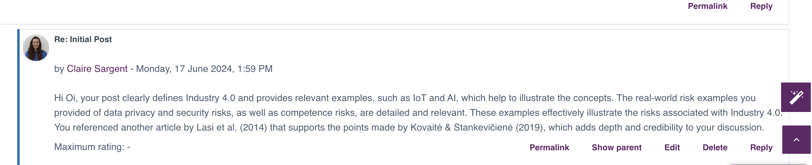

Unit 1: An Introduction to Security and Risk ManagementCollaborative Discussion 1: The Risks of Digitalisation
Initial PostSummary of Week 1: Security and Risk Management
In the first week of our course, we explored foundational concepts in Security and Risk Management.
We reviewed various definitions of these terms, highlighting their importance in protecting assets and mitigating threats.
Key concepts in security and risk management were examined, emphasising their interrelated nature.
A significant part of our learning was the Risk Management Process, which involves identifying, assessing, qualifying, and mitigating risks.
This proactive approach underscored the importance of anticipating threats rather than merely reacting to them.
By the end of the week, we gained the ability to:
• Discuss different definitions of risk.
• Assess, qualify, and mitigate risks.
• Describe methods for quantifying and qualifying risks.
• Identify and select appropriate security and risk standards for various situations.
This foundational knowledge sets the stage for applying these principles in real-world scenarios,
highlighting the critical importance of security and risk management in today's digital landscape.
Unit 2: Threat Modelling Exercises
Peer Response

Unit 2 SeminarTitle: Threat Modelling Exercises
Read Shostack (2018), chapters 3 – 5, which cover STRIDE and DREAD, Attack Trees and Attack libraries.
Read Spring et al (2021), which discusses the history and some failings with CVSS.
Then create a threat model based on one of the following scenarios:
Threat Model for a Large International Bank Based in the UK1. Identify Assets and Security Objectives:
Assets:
• Customer data (personal and financial information)
• Bank internal systems (databases, servers, applications)
• Financial transaction systems
• Physical assets (ATMs, data centers)
• Communication networks
Security Objectives:
• Confidentiality of customer data
• Integrity of financial transactions
• Availability of banking services
• Compliance with regulatory requirements
2. Identify Threats Using STRIDE:
Spoofing:
• Unauthorised access to bank accounts
• Phishing attacks to steal credentials
Tampering:
• Altering financial transactions
• Modifying database records
Repudiation:
• Customers denying transactions
• Employees denying malicious actions
Information Disclosure:
• Data breaches exposing customer information
• Unencrypted data transmission
Denial of Service (DoS):
• DDoS attacks on banking websites
• Overloading transaction systems
Elevation of Privilege:
• Exploiting vulnerabilities to gain administrative access
• Insider threats abusing access rights
3. Assess Risks Using DREAD:
• Damage Potential: What is the extent of the damage if the threat is realised?
• Reproducibility: How easy is it to reproduce the threat?
• Exploitability: How easy is it to exploit the threat?
• Affected Users: How many users are affected?
• Discoverability: How easy is it to discover the threat?
4. Develop Attack Trees:
Root Node: Unauthorised access to customer accounts
Child Nodes:
• Phishing attack to steal credentials
• Exploit vulnerability in online banking application
• Brute-force attack on weak passwords
Mitigations:
• Implement multi-factor authentication
• Regular security updates and patch management
• Strong password policies and account lockout mechanisms
5. Utilise ATT&CK Libraries:
Use the MITRE ATT&CK framework to map out possible tactics and techniques attackers might use:
• Initial Access: Phishing, Exploit Public-Facing Application
• Execution: Scripting, PowerShell
• Persistence: Account Manipulation, Boot or Logon Autostart Execution
• Privilege Escalation: Exploitation for Privilege Escalation, Valid Accounts
• Defense Evasion: Obfuscated Files or Information, Disable Security Tools
• Credential Access: Credential Dumping, Input Capture
• Discovery: Network Service Scanning, System Network Configuration Discovery
• Lateral Movement: Remote Services, Pass the Hash
• Collection: Data from Local System, Data from Network Shared Drive
• Exfiltration: Exfiltration Over C2 Channel, Automated Exfiltration
• Impact: Data Destruction, Service Stop
6. Mitigation Strategies:
Technical Controls:
• Encryption of sensitive data
• Network segmentation
• Regular security audits and penetration testing
• Intrusion detection and prevention systems
Administrative Controls:
• Security awareness training for employees
• Incident response planning
• Regular reviews of access rights
Physical Controls:
• Security of data centre’s
• Surveillance and monitoring of physical premises
7. Document and Review:
• Maintain a detailed threat model document
• Regularly update the model to reflect new threats and changes in the environment
• Conduct periodic reviews and simulations to test the effectiveness of mitigation strategies
Unit 3: Introduction to Threat Modelling and ManagementSecurity standards: Review the following links/ websites and answer the questions below.
ICO. (2020) Guide to the General Data Protection Regulation (GDPR).
PCI Security Standards.org. (2020) Official PCI Security Standards Council Site - PCI Security Standards Overview.
HIPAA. (2020) HIPAA For Dummies – HIPAA Guide.
• Which of the standards discussed in the sources above would apply to the organisation discussed in the assessment?
For example, a company providing services to anyone living in Europe or a European-based company or public body would most likely be subject to GDPR.
A company handling online payments would most likely need to meet PCI-DSS standards.
1. GDPR (General Data Protection Regulation):
• Applicability: GDPR applies to any organisation that processes personal data of individuals in the European Union, regardless of the organisation's location.
• Evaluation: To check if GDPR standards are being met, you would typically assess:
o How personal data is collected, stored, and processed.
o Whether data subjects' rights (such as access, rectification, erasure) are respected.
o Existence of mechanisms for data breach notification and handling.
• Recommendations:
o Conduct a data protection impact assessment (DPIA) to identify and mitigate risks.
o Implement data protection policies and procedures.
o Ensure staff are trained on GDPR principles and requirements.
• Evaluate the company against the appropriate standards and decide how would you check if standards were being met?
2. PCI-DSS (Payment Card Industry Data Security Standard):
• Applicability: PCI-DSS applies to organisations that handle credit card information.
• Evaluation: To check if PCI-DSS standards are being met, you would typically assess:
• How credit card data is processed, stored, and transmitted.
• Compliance with requirements such as encryption, access control, and regular security testing.
• Implementation of policies and procedures to protect cardholder data.
Recommendations:
• Conduct regular PCI-DSS assessments and audits.
• Segment the cardholder data environment from the rest of the network.
• Implement strong access control measures.
• What would your recommendations be to meet those standards?
3. HIPAA (Health Insurance Portability and Accountability Act):
• Applicability: HIPAA applies to organisations handling protected health information (PHI) in the United States.
• Evaluation: To check if HIPAA standards are being met, you would typically assess:
o How PHI is handled, stored, and transmitted.
o Implementation of administrative, physical, and technical safeguards to protect PHI.
o Compliance with requirements for privacy, security, and breach notification.
• Recommendations:
o Conduct regular risk assessments to identify vulnerabilities.
o Implement policies and procedures to ensure compliance with HIPAA requirements.
o Provide training to staff handling PHI on HIPAA regulations.
• What assumptions have you made?
Assumptions:
• The organisation's nature and scope of operations have not been detailed,so specific applicability to GDPR, PCI-DSS, or HIPAA cannot be definitively assessed without additional context.
• The organisation may fall under multiple regulatory regimes depending on its activities and the data it handles.
• Compliance requires ongoing efforts including audits, assessments, and continuous improvement of security measures.
In summary, to determine which standards apply and to assess compliance:
• Identify the nature of the organisation's activities (e.g., handling personal data, processing payments, dealing with healthcare information).
• Conduct detailed assessments against relevant standards (GDPR, PCI-DSS, HIPAA) to evaluate current practices.
• Recommend actions based on gaps identified during assessments to ensure compliance.
Next Steps: To effectively evaluate compliance:
• Identify the scope: Determine which standards (GDPR, PCI-DSS, HIPAA) are relevant based on the organisation's activities and data handling practices.
• Conduct assessments: Perform detailed audits or assessments against the chosen standards to identify gaps and areas of improvement.
• Implement remediation: Develop and implement an action plan to address identified gaps and ensure compliance.
• Monitor and maintain: Establish procedures for ongoing monitoring, audits, and training to maintain compliance with applicable standards.
These steps will help ensure that the organisation meets the necessary security standards and protects sensitive data effectively.
Unit 4: Security Standards, Frameworks and Disaster Recovery
Read the article by Barafort et al (2018) and the blog by Kirvan (2021).
Review the websites listed in the blog and then answer the following questions.
Q1. Which of the frameworks do you think would be applicable to the following organisations:
a. International bank.
b. Large hospital.
c. Large food manufacturing factory.
Q2. Summarise the tests and recommendations you would make to the owners/ managers for each of the above businesses to help them use the frameworks and comply with industry standards.
Q1. Applicable Frameworks for Each Organisation
1. International Bank
Applicable Frameworks:
• COBIT (Control Objectives for Information and Related Technologies): Provides a comprehensive framework for managing and governing enterprise IT (Barafort et al., 2018).
• ITIL (Information Technology Infrastructure Library): Focuses on aligning IT services with the needs of the business (Kirvan, 2021).
• ISO/IEC 27001: Specifies the requirements for establishing, implementing, maintaining, and continually improving an information security management system (ISMS) (Barafort et al., 2018).
2. Large Hospital
Applicable Frameworks:
• HL7 (Health Level Seven International): Provides a framework and standards for the exchange, integration, sharing, and retrieval of electronic health information (Barafort et al., 2018).
• HIPAA (Health Insurance Portability and Accountability Act): Provides data privacy and security provisions for safeguarding medical information (Kirvan, 2021).
• ISO 9001: Specifies requirements for a quality management system (QMS) where an organisation needs to demonstrate its ability to consistently provide products and
services that meet customer and applicable statutory and regulatory requirements (Barafort et al., 2018).
3. Large Food Manufacturing Factory
Applicable Frameworks:
• ISO 22000: Specifies requirements for a food safety management system to ensure that food is safe throughout the entire food chain (Kirvan, 2021).
• HACCP (Hazard Analysis Critical Control Point): A management system addressing food safety through the analysis and control of biological, chemical, and physical hazards (Barafort et al., 2018).
• ISO 9001: As in hospitals, it helps ensure quality management across various processes within the manufacturing setup (Kirvan, 2021).
Q2. Tests and Recommendations for Compliance
1. International Bank
Tests:
• Conduct regular IT audits to ensure compliance with COBIT and ISO/IEC 27001 standards.
• Perform vulnerability assessments and penetration testing to identify and mitigate security risks.
• Evaluate the alignment of IT services with business needs using ITIL.
Recommendations:
• Implement a robust IT governance framework using COBIT.
• Ensure continuous staff training and awareness programs on information security.
• Establish a risk management process to identify, assess, and mitigate risks effectively.
2. Large Hospital
Tests:
• Conduct periodic audits to ensure compliance with HL7 and HIPAA regulations.
• Perform security risk assessments to safeguard electronic health records.
• Review and test the effectiveness of the quality management system in line with ISO 9001.
Recommendations:
• Implement comprehensive data encryption and access control measures.
• Train staff on compliance requirements related to patient data privacy.
• Develop and maintain detailed documentation for all processes related to quality and information security management.
3. Large Food Manufacturing Factory
Tests:
• Regularly audit the food safety management system against ISO 22000 requirements.
• Conduct hazard analysis and critical control point verification to ensure HACCP compliance.
• Perform quality control checks and process audits in line with ISO 9001.
Recommendations:
• Develop a culture of continuous improvement and compliance within the organisation.
• Ensure that all employees are trained in food safety and quality management principles.
• Establish a robust traceability system to quickly identify and address potential food safety issues.
References:
Barafort, B., Mesquida, A.L., Mas, A., Peris-Ferrer, N. and O’Connor, R.V., 2018.
Integrating risk management in IT settings from ISO standards and management systems perspectives. *Computer Standards & Interfaces*, 56, pp.103-112.
Kirvan, P., 2021. How to implement an IT risk management framework. *TechTarget*.
Available at: https://www.techtarget.com/searchsecurity/definition/IT-risk-management-framework
Unit 4 Seminar Activities
Activity 1: DR Terms and Concepts
Read Alhazmi & Malaiya (2013) and then answer the following questions:
1. What is the difference between Hot Standby, Warm Standby and Cold Standby? Frame your answers in terms of availability, RPO and RTO.
2. Does the technology deployed affect the options available? For example, can you create a high availability, hot standby solution between two on-premise data centres?
Justify and support your answers with appropriate references from academic journals and sources.
Add you answers to your e-portfolio and be prepared to share them in this week’s seminar.
Q1. Difference between Hot Standby, Warm Standby, and Cold Standby
Hot Standby:
• Availability: High
• RPO (Recovery Point Objective): Near zero
• RTO (Recovery Time Objective): Near zero
• Description: In a hot standby setup, the secondary system runs concurrently with the primary system, constantly mirroring the data and operations.
This means that if the primary system fails, the secondary system can take over almost immediately with minimal to no data loss.
Warm Standby:
• Availability: Moderate to High
• RPO (Recovery Point Objective): Low
• RTO (Recovery Time Objective): Short
• Description: In a warm standby setup, the secondary system is kept updated periodically.
It is not actively running but is in a ready state that can be brought online quickly in case of a primary system failure.
Some data loss may occur depending on the frequency of updates.
Cold Standby:
• Availability: Low
• RPO (Recovery Point Objective): High
• RTO (Recovery Time Objective): Long
• Description: In a cold standby setup, the secondary system is off and requires manual intervention to start up and sync with the latest backup.
This results in a longer downtime and potentially more data loss since the last backup.
Q2. Effect of Technology on Standby Options
High Availability and Hot Standby between Two On-Premise Data Centres:
• Feasibility: Yes, it is possible to create a high availability, hot standby solution between two on-premise data centres.
However, it requires significant investment in infrastructure and robust network connectivity to ensure continuous data replication and minimal latency.
Technology Considerations:
• Data Replication: Technologies like synchronous replication are crucial to ensure that both data centres are in sync.
• Network Infrastructure: A high-speed, low-latency network connection is essential for real-time data replication.
• Failover Mechanisms: Automated failover mechanisms must be in place to switch operations seamlessly in case of a failure.
References
Alhazmi, O.H. & Malaiya, Y.K., 2013. Evaluating disaster recovery plans using the analytical hierarchy process.
*Journal of Information Systems Education*, 24(1), pp.25-33.
Activity 2: DR Solutions Design
Read Opara-Martins et al (2014) and Morrow et al (2021) and answer the following questions:
1. What are some of the main vendor lock-in issues the authors identify? How would you mitigate them?
2. What are some of the security concerns with the modern cloud? How can these be mitigated?
1. Vendor Lock-in Issues:
Main Issues:
• Proprietary Technologies: Vendors often use proprietary technologies, making migration difficult.
• Data Transfer Costs: High costs associated with moving data out of a vendor's infrastructure.
• Service Dependencies: Reliance on vendor-specific services and APIs complicates migration.
• Contractual Constraints: Long-term contracts with high exit fees bind customers to a vendor.
Mitigation Strategies:
• Standardisation: Use standardised technologies and APIs.
• Multi-Cloud Strategy: Implement a strategy using multiple cloud providers.
• Negotiation: Negotiate flexible contract terms.
• Containerisation: Use containers for application portability.
2. Security Concerns with the Modern Cloud:
Concerns:
• Data Breaches: Unauthorised access to sensitive data.
• Data Loss: Accidental deletion or corruption of data.
• Insider Threats: Malicious actions by insiders.
• Compliance Issues: Ensuring regulatory compliance.
• Service Denial: DDoS attacks causing service unavailability.
Mitigation Strategies:
• Encryption: Encrypt data in transit and at rest.
• Access Controls: Implement strict access controls and audits.
• Backup and Recovery: Regularly back up data and have a recovery plan.
• Monitoring and Logging: Continuously monitor and log activities.
• Compliance Management: Ensure cloud services comply with regulations.
• DDoS Protection: Use protection services against DDoS attacks.
References:
Opara-Martins, J., Sahandi, R., & Tian, F. (2014). Critical analysis of vendor lock-in and its impact on cloud computing migration: a business perspective.
*Journal of Cloud Computing*.
Morrow, T., Bradford, R., & Reeder, F. (2021). Security concerns and strategies in modern cloud computing environments. *Cybersecurity Journal*.
Unit 5: Future Trends in Security and Risk Management
Unit 6: The Great Debate - What Will be the Most Influential Trend in ISM in the Next 5 Years?

 Summary of Week 1: Security and Risk Management
In the first week of our course, we explored foundational concepts in Security and Risk Management.
We reviewed various definitions of these terms, highlighting their importance in protecting assets and mitigating threats.
Key concepts in security and risk management were examined, emphasising their interrelated nature.
A significant part of our learning was the Risk Management Process, which involves identifying, assessing, qualifying, and mitigating risks.
This proactive approach underscored the importance of anticipating threats rather than merely reacting to them.
By the end of the week, we gained the ability to:
• Discuss different definitions of risk.
• Assess, qualify, and mitigate risks.
• Describe methods for quantifying and qualifying risks.
• Identify and select appropriate security and risk standards for various situations.
This foundational knowledge sets the stage for applying these principles in real-world scenarios,
highlighting the critical importance of security and risk management in today's digital landscape.
Summary of Week 1: Security and Risk Management
In the first week of our course, we explored foundational concepts in Security and Risk Management.
We reviewed various definitions of these terms, highlighting their importance in protecting assets and mitigating threats.
Key concepts in security and risk management were examined, emphasising their interrelated nature.
A significant part of our learning was the Risk Management Process, which involves identifying, assessing, qualifying, and mitigating risks.
This proactive approach underscored the importance of anticipating threats rather than merely reacting to them.
By the end of the week, we gained the ability to:
• Discuss different definitions of risk.
• Assess, qualify, and mitigate risks.
• Describe methods for quantifying and qualifying risks.
• Identify and select appropriate security and risk standards for various situations.
This foundational knowledge sets the stage for applying these principles in real-world scenarios,
highlighting the critical importance of security and risk management in today's digital landscape.